In this blog post I will show you how to set up the Cassandra cluster on Docker and how to use F# to connect to it to execute any type of your application specific operations and queries. I am using Mac, having Docker Toolbox installed on OSX with F#. For the code example I am using F# ProjectScaffold template with Paket in Xamarin Studio on OS X.
Cassandra
First off, Cassandra is a pretty interesting and powerful distributed database. If you come from the relational databases background you should thoroughly explore the system before using it. Even though CQL, the language used by Cassandra for performing queries, is quite similar to SQL from the first glance, the approach of how we create and manage tables is really different. The benefits of using Cassandra are noticeable if you need a low latency service and a huge, easily scaled data storage. It doesn't mean that you should use Cassandra for all projects that require low latency and big data scalability because it is not the only one solution that's able to provide these characteristics. If you are about to build your fast and big data application, the advice is: explore all the available options (i.e. Cassandra, Riak, HBase and etc.) and compare the results from your application's design and performance point of view. It's not always easy, but it's the only way to build the reliable system.
Going back to Cassandra. How does it store our data? The approach is based on the column families and needs to be well understood before making the decision to use Cassandra. If in relational databases the goal of the primary key is to provide uniqueness, in Cassandra the primary key serves two purposes: uniqueness and satisfaction of the table's queries. Therefore, the data modeling process differs from the one we are using in the relational world. Working with RDBMS we create tables for entities and for many-to-many relationships, following the rules of normalization. We save some space by normalizing our data model, but to query data we perform a lot of joins, which are very expensive resulting in the fact that latency sucks. The problem of RDBMS is also the known issues and complexity of scalability when your data becomes really big. Working with data is always a trade-off. Relational systems trade-off low latency and the ease of scalability for saving the disk space and providing consistent transactions. With Cassandra you get a very low latency and decent scalability, but it will utilize more disk space because of it's data storage approach. There is no right and wrong, you just choose what is more critical for you - fast response and scalability or disk space and transactions. In Cassandra you have a full control under consistency level and can tune the value of it for your queries. It just means, that more reads before writes will happen for those queries, they will be safer but take longer. Cassandra data modeling approach is repelled by the mechanism of data storage system. Cassandra queries data by the partition key. The partition key of the given row might take one of the values from the whole consistent hash ring. All nodes in the cluster are responsible for storing data with the partition key within some range from the hash ring. If you are using replication (which you probably should use), then the node is also storing some of the replicated data from other nodes in addition to his own partition range responsibility. When the query comes to the cluster first thing that happens is determining which node has the necessary data by the partition key. Let's take a look at the simple example. If we want to find out the information about all coffee shops located on some particular street, we will have the following table:
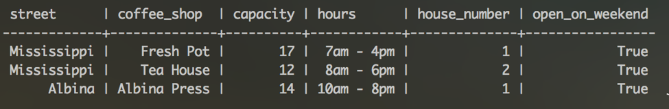
CREATE TABLE coffee_shops_by_street (
street text,
coffee_shop text,
hours text,
capacity int,
house_number int,
open_on_weekend boolean,
PRIMARY KEY (street, coffee_shop)
) WITH CLUSTERING ORDER BY (coffee_shop ASC)
Let's insert some data into the table.
insert into coffee_shops_by_street (street, coffee_shop, hours, capacity, house_number, open_on_weekend) values ()
When I was doing this, I have misspelled the names of the coffee shops a couple of times, so I had to remove the ones I have inserted incorrectly.
After the insertions you should be able to run the select * from query and see the results same as on the picture above. This way we know how our data looks like in the tabular form. But actually, is the way Cassandra stores our data the same we see it? Hm, nope. If we look at how this table is stored internally, we will see something like this:
As you see there are some differences in how our data is saved on disk versus how we receive the results from Cassandra in a tabular view.
Here, Mississippi and Alberta are partition keys. They are highlighted with yellow. That means, when we are querying the table we are using the hash of these values to determine which node is responsible for the partition. As you see, all the information with the Mississippi key is stored together. On the picture each partition has according array of rows where all data for the partition is stored. For the Mississippi partition we store two actual coffee shop records and one marked for the deletion, which is not displayed when we query the table. The same about Alberta or any other street name. We can also see the timestamps. Storing data this way Cassandra makes it fast to the data, which is all stored together after we know the partition key. Another thing you might have noticed is that for each partition key the information is stored in rows as a key value pairs for each cell of data. For example, we have house_number as a cell name and 1 as a cell value, we have open_on_weekend as a cell name and true as a cell value. If you look at the table definition and at the internal representation attentively, you might have noticed that not all columns are stored under the row key, for example, where is the coffee_shop column? The coffee_shop column here is a clustering column. Remember that in Cassandra the primary key serves two purposes? Yes, uniqueness and satisfaction of the queries to the table. The first rule is: the column we are using in the WHERE equality clause of the query should be part of the partition key. This way Cassandra will know where to go to look for data inside the cluster. The second rule is: the primary key should reflect the uniqueness of a data entity. In other words, the primary key should consist of the partition key and other columns that define the uniqueness of the data row. What does that mean? If we have the table coffee_shops_by_street, what makes the returned coffee shop unique? If we just leave our primary key to consist just of the partition key, which is a street name, then after the attempt to insert one more new coffee shop to our table we will notice that no rows were added. Instead, all other columns corresponding to that particular street name will be rewritten with the new inserted values. This is called an UPSERT in Cassandra. To prevent this happening we should have the correct data model. So what is the correct data model in our case? Well, if we know the street name and the coffee shop name together - there will be only one unique data entry returned by these parameters. Therefore, coffee shop name should be the part of our primary key to fulfill uniqueness. We don't need to support coffee shop name equality querying in the where clause, so we will make a coffee shop name a clustering column. Clustering columns in Cassandra is special type of columns that support inequality queries, like range queries. They also allow sorting. To support this, Cassandra stores clustering columns in a special way. Take a look at the internal representation of our table again - each row stores the clustering column information, which is coffee_shop in our case. That keeps our rows ordered. There can be more than one clustering column in a table, each of them will be stored on the row's level in the internal representation of the table structure.
One important note. If you have been working with Cassandra version less that 3.0 you may notice that with introduction of Cassandra 3.0 the SSTable format was changed to reduce data duplication and include other useful optimizations. For more information, look here and here.
Quoting Andrew Tolbert, member of DataStax Cassandra Team:
"A key differentiator between the storage format between older verisons of Cassandra and Cassandra 3.0 is that an SSTable was previously a representation of partitions and their cells (identified by their clustering and column name) whereas with Cassandra 3.0 an SSTable now represents partitions and their rows."
If you have been using cassandra-cli utility to see how data is stored on disk, there are some good news for you - cassandra-cli is deprecated and removed in Cassandra 3.0. Utilities like sstable2json and json2sstable are also deprecated. However, there still is a way look into internals and get a feel of how our data is *actually* stored. For these purposes you can use the sstable-tools from here.
Just download the jar to your node's machine and to use toJson command, indicating the data file you want to inspect, like this:
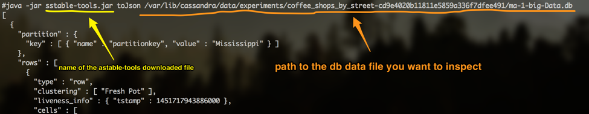... and you will see the results showing the internal representation of the table.
Anyway, back to our table. You may wonder, what a strange table, coffee_shops_by_street, sounds weird? Why not to have a table coffee_shops and a streets.. Yes, if you come from the relational world you may find it very unusual. But it is quite logical to have the table as if we are naming the query and let's see why. Now it is easier to explain to you, after you know how the table looks like inside and how Cassandra searches for the values by the queries. The main practical purpose of the table in Cassandra is to satisfy the query. The overall physical data modeling approach in Cassandra is query based and built around queries and access patterns for your conceptual data model. Let's look at it a little bit closer. When you think of any application we always have some objects to manipulate, like coffee shops or streets in our case. We have relationships between the objects. This part is independent from any particular database. The next step is thinking. Thinking of the tasks and operations that will be performed on those objects. Collaboration and analysis is very important on this step. As an output you should get the list of queries that will be executed against the database we will create. In Cassandra, as a next step, we will create the table for almost each query. Then all the operations will be optimized for the query and high speed. This will however result in data denormalization, which is absolutely normal for Cassandra, it helps queries to be fast and always find the location of the data in constant time. Denormalization also results in the necessity to perform the writes into the several tables at once. Syncing the tables however can be performed as an atomic operation using batches. But don't mix good batches and bad batches.
As RDBMS trade-off low latency for disk space, Cassandra trades-off disk space for low latency.
Here are some important notes to save in the brain.
- Cassandra's primary key should fulfil the uniqueness and equality querying purposes.
- Primary key consists of the partition key and clustering columns that add uniqueness to our data entries.
- Partition key helps Cassandra to find the location of data on the node fast.
- Clustering columns allow sorting and range queries.
- Internally, all data in the table is grouped by partition that allows to stores all data with the same partition key together.
- Inside, the partition is a collection of rows.
- Rows store the collection of cells, which are key value pairs of column names and column values.
- If the row has some clustering columns they are not stored as cells inside the partition row, they are stored on the row level.
- When we build tables in Cassandra, we build them not for having entities in the tabular representation, we build them to satisfy queries.
- It results in data denormalization, that requires table synchronization on writes but results in low query latency.
To give you a little bit more information about the internal structure - Cassandra storage mechanism is the persistent, ordered, immutable hashmap (SSTable). When writes occur, they go to the commit log, which is an immutable and append only data structure, and the memtable, stored in RAM, like a cache of data. When the memtable is full flush happens. During the flush the content of the memtable is moved to disk and an SSTable is created. After some period of time the compaction process will be triggered. Compaction is the operation that combines several SStables on disk into one new SStable containing all the data, and removing old SSTables. Basically, it is implemented as a merge sort of those SSTables. When the read request comes to some node, it will gather all the information it has for the given partition key from all existing SSTables, including the memtable. For more information about Cassandra's storage read this.
Docker
To have our Cassandra cluster easily deployed we can use Docker. For this blog post I have created the local Cassandra cluster of 3 nodes on my machine using Docker. But you can also use Docker in a cloud environment like Amazon or Google Cloud. To start with docker follow the installation instructions on the Docker website. I am using Mac and after the installation I have Kitematic and Docker Quickstart terminal installed on my machine. You can open Kitematic to see the list of available containers. We just need 3 nodes for Cassandra. And yeah, when Docker is installed it also installs Virtualbox to store the containers and you will notice that we have the image named "default" created after Docker is installed.
Open the docker quickstart terminal:
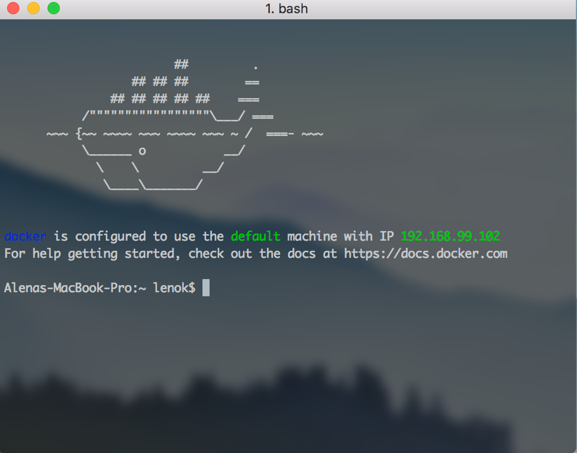To create the Cassandra node we should execute the command:
$ docker run --name name-of-your-node cassandra
After that you will be able to log in to the cassandra instance and execute some commands.
$ docker exec --it name-of-your-node bash
To see the cluster status:
$ nodetool status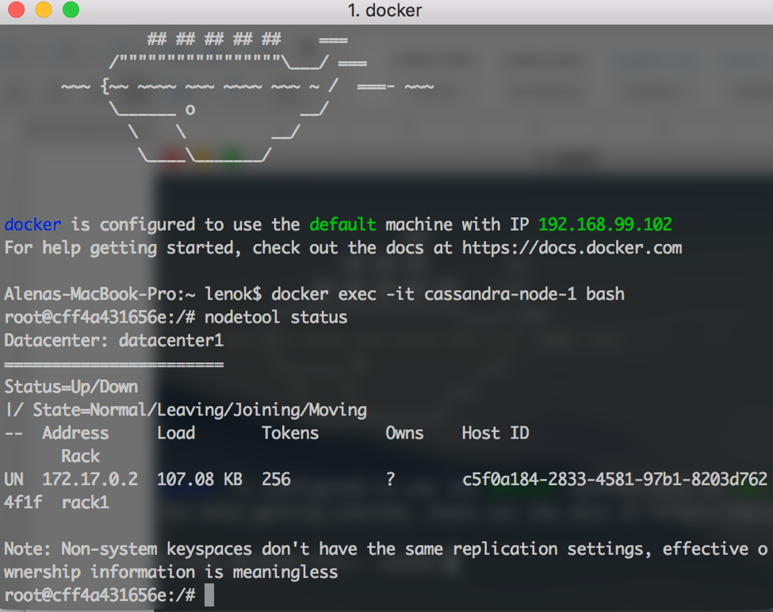
We have just one node so far, which is UP and in the NORMAL state. Which is good. But we need two more nodes.
To create a node that is in the same cluster that our first node we need to link them together. To create two other nodes use the command:
$ docker run --name name-of-your-new-node --link name-of-your-node:cassandra -d cassandra
After that you can connect to the terminal of any node from the cluster and run the following command to ensure that they all are within the same cluster:
$ nodetool status
It should output something like this when some nodes are joining (status is UJ, J is for joining):
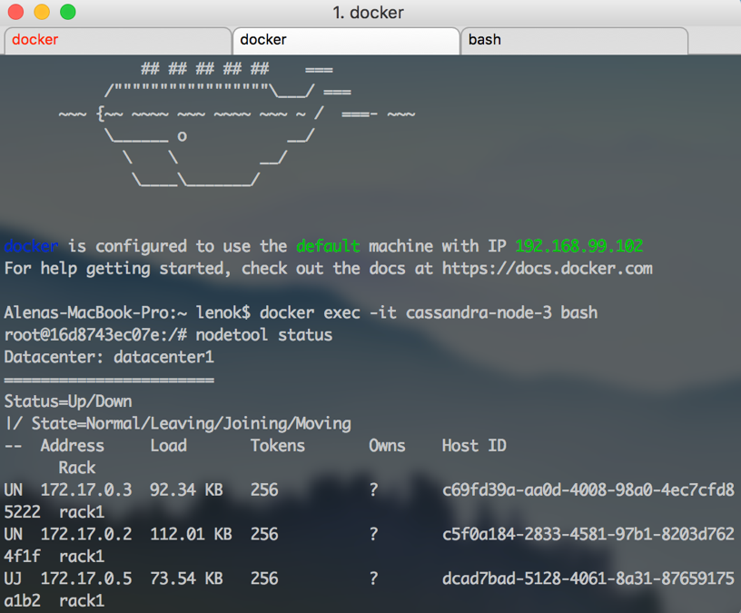And like this, when all nodes are finally up and running normally:
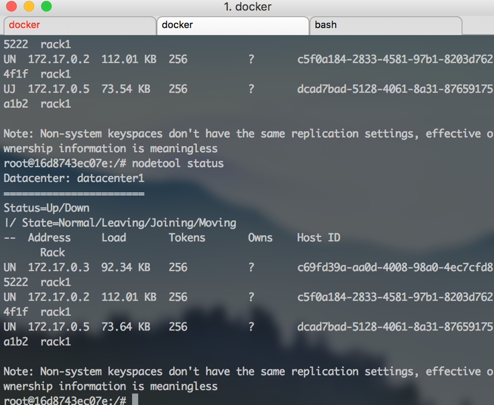After that you can log in to all machines and look into /etc/cassandra/cassandra.yaml file.
To do it inside all machines at the same time you might want to use the terminal application that allows broadcasting to all open tabs or windows, to make typing faster. I am using iTerm2 Shell -> Broadcast -> Send output to all tabs in all windows menu item.
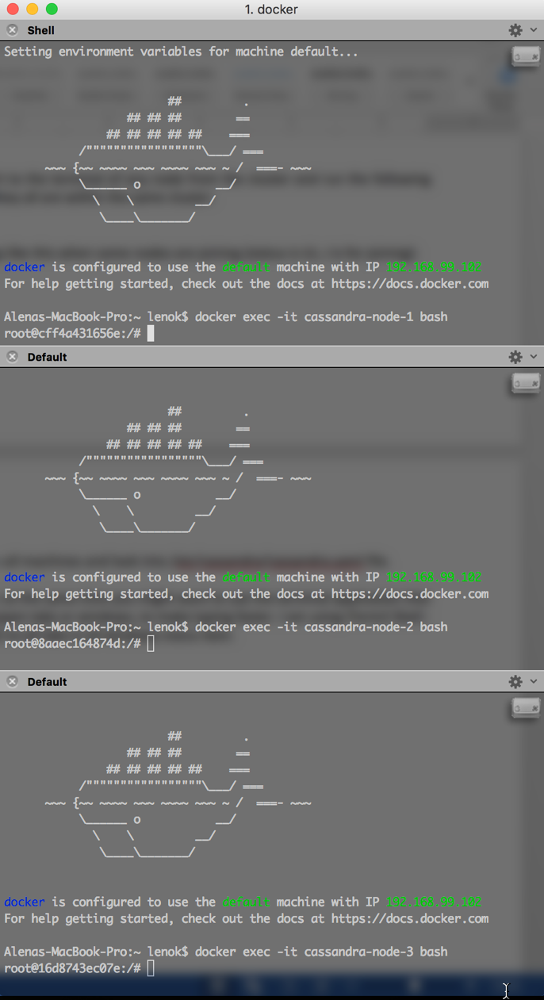First of all, we need vim to edit the content of the config files, so let's install it:
$ apt-get update $ apt-get install vim
Open the cassandra.yaml in vim:
$ vim /etc/cassandra/cassandra.yaml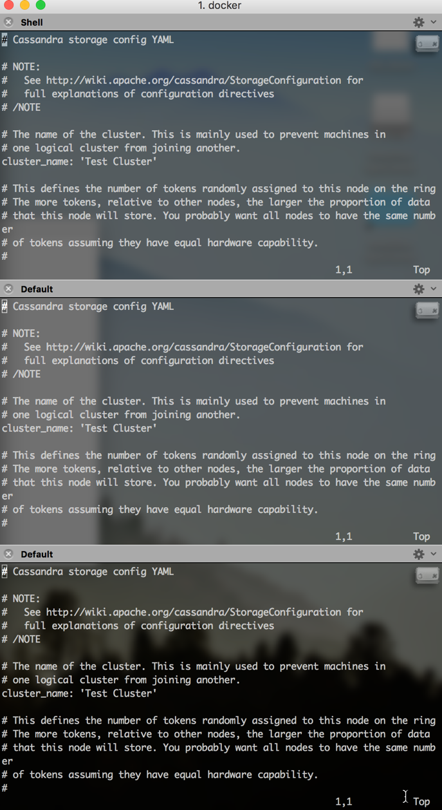
Here is the cheetsheet on vim so you will not get lost in the commands for insertion, saving and other commands.
Actually, before opening the cassandra.yaml file, let's go to /var/lib/cassandra directory and remove all directories from there. We want our system to be clean. All these directories will be recreated later.
Now, open the cassandra.yaml opened, type this:
/cluster_name:.. and press enter. This command is a search for the phrase, which will redirect you right to the line where cluster_name is. The default name of the cluster is "Test Cluster". For this post it is really my test cluster so I will just leave it as is.
The next setting interesting for us is listen_address. Let's do the search for it to be able to see the value:
/listen_address:For me listen address for each node on Docker is set to 172.17.0.2, 172.17.0.3 and 172.17.0.4 accordingly. We just need to make sure it's set.
The next setting is rpc_address, search for it and make sure that the rpc_address has the same values as each node's ip address. To make it easier, type this:
:r ! hostname -I.. and press enter. This will output the node's ip address, so you can replace the 0.0.0.0 value with the ip address.
The last one we need to change is called "seeds". Seeds is a special string we need to set for the node in the cluster, which contains the ip addresses of other nodes to be gossiping with. This allows to be aware of the cluster topology changes and other related things. As we have a really small example cluster, let's set the ip addresses of 3 nodes inside the seeds string. But with big clusters, don't make all nodes to be seeds, the best practice is to choose just a set of nodes. My seeds line looks like this:
- seeds: "172.17.0.2,172.0.0.3,172.0.0.4"
Now we are done, let's save the changes with ":wq" command. For now we're done with cluster setup!
The next step is to connect to our cluster from FSharp. But before doing this we should first open the necessary ports, so FSharp will be able to actually connect. Go to Kitematic, for the each container, go to the "Ports" section and set some value for the 9042 port (it is Cassandra's CQL native transport port):
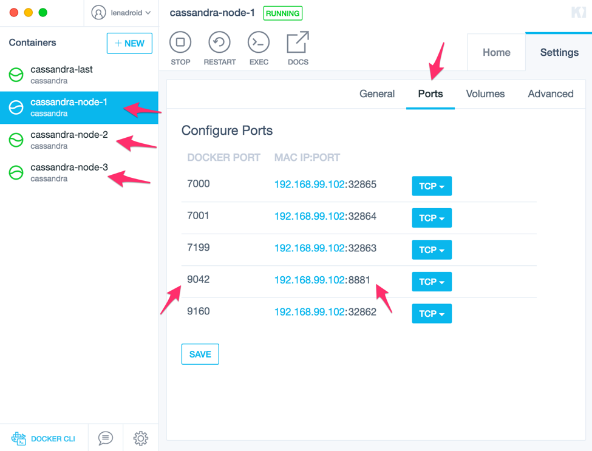After ports are opened we can try to connect to our Cassandra cluster from FSharp.
Connecting to Cassandra on Docker from F#
What options do we have?
If you look at the section about Cassandra, you will see that there is more than one option to choose from to work with Cassandra. But for this example I will use the official Cassandra .NET driver, which is available by the link. For your own projects I strongly recommend to investigate all available driver options and choose the one that suits best for your case.
I am using Mac and Xamarin Studio and Project Scaffold for this example.
First step is to clone the repo of Project Scaffold to the location where you want to create the example:
$ git clone https://github.com/fsprojects/ProjectScaffold.git
If you look inside the ProjectScaffold directory you'll find a bunch of files, including build.sh file and .paket directory:
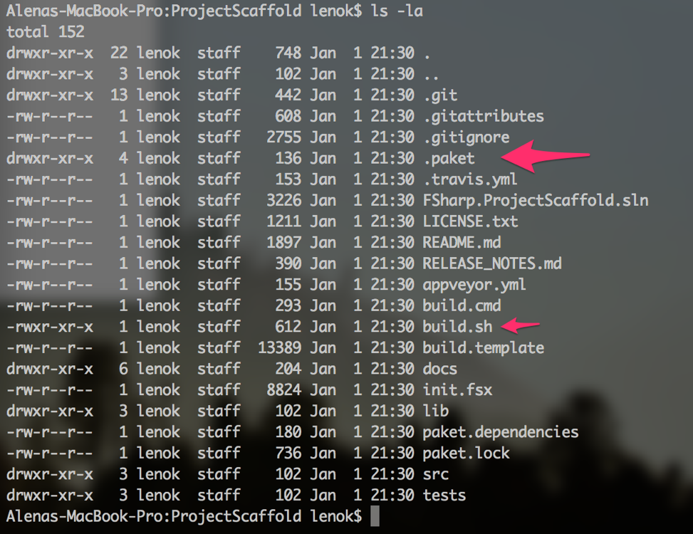Execute the build.sh command, you'll be asked for a bunch of questions about the project name and other things, just go through all the steps.
Next thing we want to do is to add the dependency to the Cassandra driver. With Paket it can be done pretty easily. You can find a lot of information about Paket here.
Open the paket.dependencies file and add the line for the Cassandra driver dependency:
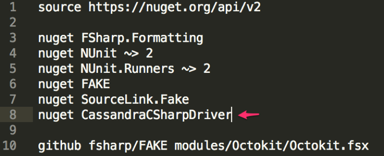Run the command to install the dependencies for the solution:
$ paket install
After that the packages directory should contain all the necessary dependencies.
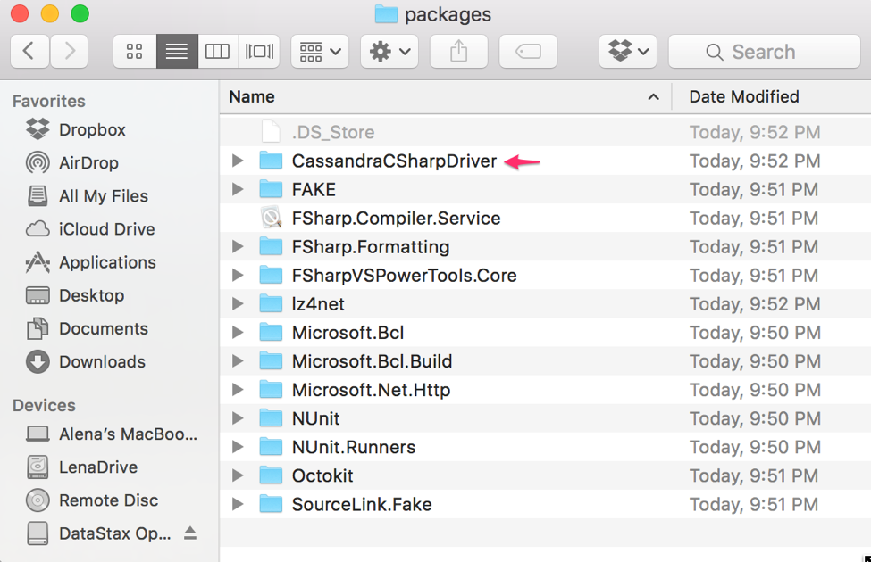You can rename the "ProjectScaffold" directory to something meaningful, probably the same name you indicated during the ProjectScaffold creation.
Let's open the project with Xamarin Studio. You can create your fs module or another fsx file, but here I will just edit the Script.fsx file, because the purpose of this post is to show how to connect to Cassandra cluster on Docker using FSharp.
Inside the Script.fsx file I load my dependencies:
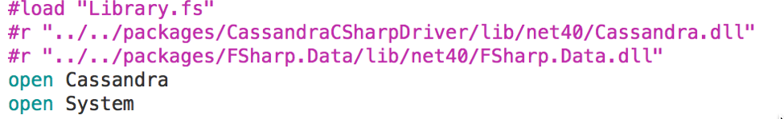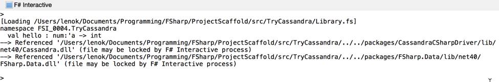
Xamarin Studio has FSharp Interactive window where we see the output of all statements we execute. To execute the statement I just select the lines I want to run and press Ctrl + Enter on Mac in Xamarin Studio.
Let's connect to our cluster:
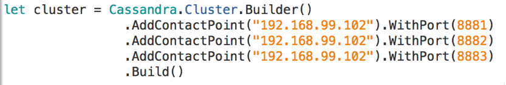We indicate the contact points for the cluster, which I am looking up in the Docker Kitematic settings.
Let's try to connect to some existing keyspace is Cassandra:
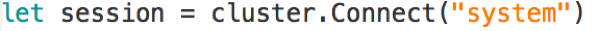And yay! Now, as you have probably already guessed, we can proceed to creating our own data model and running queries. Just as a sample, let's look at how to create that coffee_shop_by_street table and run some queries on it.
Let's create our own keyspace for this example:
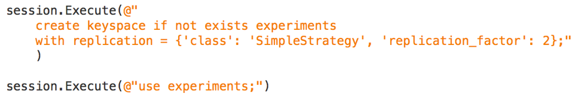We can set the replication settings on the keyspace level. For our cluster of three nodes let's make the the replication factor equal to 2.
We will need the function to display the results for our queries:
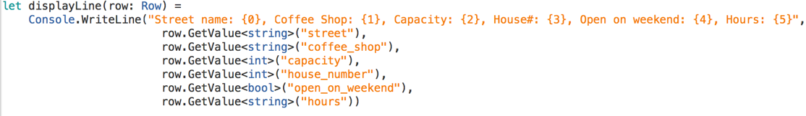Create the table, we run the following command:
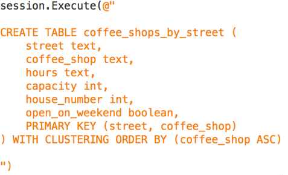Prepare the insert query we want to execute several times with different parameters:
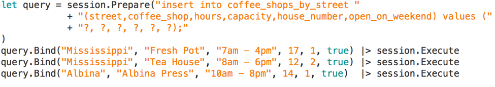Look up the results of what's stored in the table after inserts:
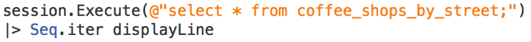Execute some other query with ordering rules for our clustering column:
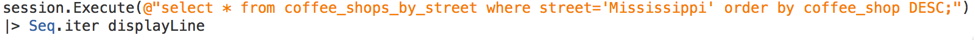The outputs of the first and the second commands are here:
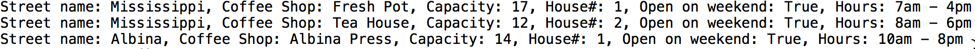And here:
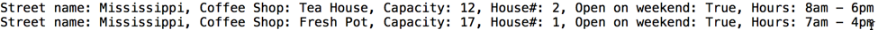The full listing of the code is here:
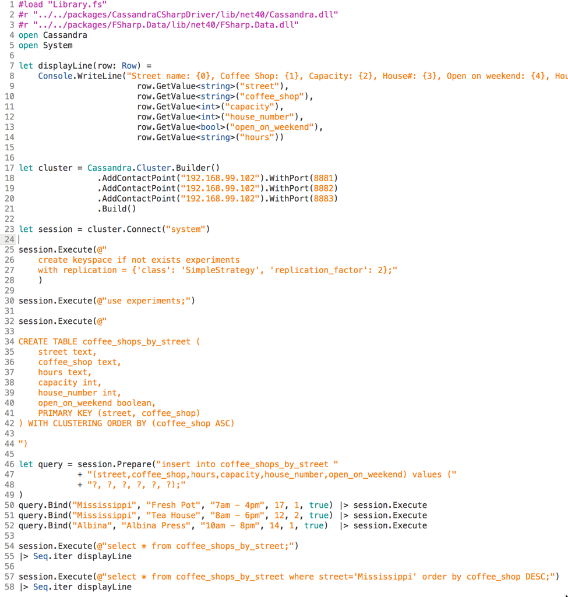